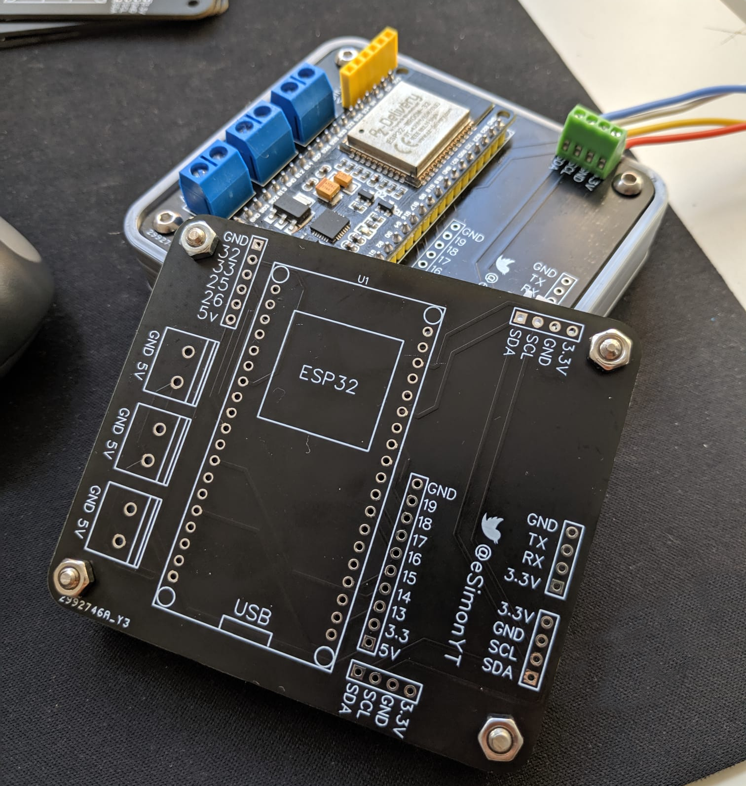

Proyectos
Durante los últimos años de carrera he estado desarrollando mi primer proyecto personal, en este proyecto he diseñado una PCB para una placa de desarollo de un ESP32 la cual permite la comunicación por WiFi y he probado distintos sensores con el objetivo de profundizar en la programación de bases de datos y la visualización de los mismos datos, todos estos datos se procesan mediante una Raspberry PI.
Prototipo
